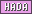

Gardevoir
 De: La Frikipedia, la enciclopedia extremadamente seria.
De: La Frikipedia, la enciclopedia extremadamente seria.
| De la serie bichos dentro de bolas:
|
| Gardevoir
|
|
|
| Nombre
|
Gardevoir
|
| Especie
|
Otaku
|
| Apariencia
|
Nabos mutantes que quieren ir a por ella
|
| Hábitat natural
|
Hentai Mundial del interné
|
| Localización
|
GameBoy, DS, 3DS...
|
| Tipo
|

|
| Habilidad
|
Ataques eléctricos
|
| Pokemonización
|
A partir de una mujer friki
|
| Número
|
282 y XXX
|
Gardevoir es el (la) Pokémon más famoso por ser el (la) (preferentemente la) con más imágenes Hentai, que según una parodia de Frikipedia de muy mal gusto, es un Pokémon de los más jodidamente sexys, al menos en el Hentai femeninos.
Dicen que es un Pokémon tipo psicotico psíquico, pero su cabeza (no esa, ya les dije preferentemente piensen que es hembra, mujer, etc) y sus brazos son verdes y es tan delgada como el tallo de una planta. Reflexionando a lo anterior, es el único Pokémon con forma humana (creo). Los demás son producto de la imaginación o animales deformes. Aparte de lo ya mencionado, Gardevoir es inmortal, cada que nace una y se comprueba que es mujer, los que la(s) odian (ver más abajo... del articulo) la intentan asesinar insertandole una polla en el ... estaca roja en la espalda, fallando las fresas pasan a ser emos.
"Usos" si eres...
Gardevoir, como toda cosa, ser vivió, semivivo, inútil que se debería ver su erradicación antes que preocuparse por la paz, la influenza o cualquier otro problema (su uso es hablar mal de ello, son mas para ya dependerá de ti el uso que les quieras dar), animal, etc. Tiene uso...
Hombre...
Mujer...
Otros datos
- Gardevoir ya dominó el mundo.
- El traje que usa es para ocultar prácticamente todo, fue una estrategia de la censura gringa por parte de Bush para hacerle creer a los niños que no hay ninguna tipa buena en este mundo (por eso hay tanto emo).
- En un Intro se le ve "peleando" con Ash y la tipa humana mas buena de Pokémon.
- Lo anterior es por que Ash es pokefílico y la quería atrapar y demostrar a May que es una buena amiga .
- Es bisexual en cada una de sus versiones (para no decepcionar a nadie).
- No es emo.
- Tienes que mantenerte calmado ya que oculta mas debajo de su ropa de lo que te imaginas, si te descontrolas morirás de un derrame nasal.
- Casi nadie ha conseguido una relación con una Gardevoir ya que de una u otra manera ese pico acaba enterrado y provocando la muerte, pero si encuentras una haz lo que tengas que hacer y mira el lado positivo: morirás feliz.
- En DMC 4 (Devil May Cry 4) Dante consigue un arma llamada Lucifer, que lanza piquitos parecidos al que tiene Gardevoir clavado en el
culo pecho, este se emociono tanto que se excito. En enlaces externos esta el vídeo que confirma esto.
- Es poco decir que el
pervertido del autor esta obsesionado con Gardevoir.
- Se cree que el Fieshtaman se refería a una Gardevoir cuando hablaba de Carla, por eso seria una odisea hacerla reír pues aparenta no tener boca.
Hay para todos
En esta parte se demuestra que Gardevoir tiene diferentes versiones para cada tipo de gusto lo cual demuestra que solo alguien muy pendejo indeciso con su sexualidad estaría en desacuerdo.
- Hombres/Lesbiana: Gardevoir (la normal).
- Mujeres/Gay: Gallade, versión macho (hombre, para los
idiotas incultos)
- Pedófilos/Menores de edad: Kirlia, preevolución de Gardevoir (su sexo no esta decidido ya que su evolución también puede ser Gallade)
- Sólo pedófilos: Ralts prácticamente la versión bebé.
Personas que adoran a Gardevoir
- Los pokemaniacos
- Los Otakus, gamer, frikis, etc. que consultaron este artículo.
- Blaziken (como indican muchas imagenes Hentai de Gardevoir).
- Los vegetarianos (notese que Gardevoir tiene los colores de un nabo).
- Las lesbianas.
- Satoshi Tajiri, cuando la creo, se hizo 1000 pajas.
- Los gays(en su version hombre).
- La mayoría de los Pokemón
La odian
Si no opinas igual
Realmente ya aceptamos a rukia, incluso a konata como diosa de Lucky Star que coño tiene de malo aceptar a otra planita en nuestras inconsientes mentes, descarriadas almas,etc.
¿Sabías que...
- ...algunos de los pokemaniacos
zoofilicos tienen sueños eroticos con Gardevoir?
- ...pueden existir gardevoirs tanto macho como mujer? (==== WTF
- ...su version humana es rukia?
- ...de la pokemonización de una tipa de buena cara, ecologista y flaca resulta Gardevoir?
- ...en pokémon x y, es posible tocarle las tetas?
- ...los gardevoirs estan enamoradas de su entrenador? (el que leeyo esto, altiro fue a buscar un gardevoir)
- ...cuando estava digievolucionando de kirlia a gardevoir, tuvo tendencias emo, y se metio un cuchillo con forma de corazon en sus tetas?
- ...pero no lo hizo por un llamado de atencion al crear esto?
- ...en algunas imágenes hentai se muestra a Gardevoir con mas pecho que May? (verídico)
- ...en cualquier pagina que busques imágenes de Gardevoir se demostrara lo anterior?
- ...sin necesidad de la palabra hentai?
- ...si consultas este articulo es porque
seguramente probablemente pienses lo mismo que el autor?
- ...si buscas en youtube lo primero que encuentras son tributos?
- ...este articulo fue escrito con la experiencia, pensamientos
pervertidos,etc. del autor?
- ...su novio se llama Gallade?
- ...que los Gallade tienen guadañas afiladas como bisturíes en los brazos y muy mala hostia (sobre todo cuando tocan a su novia)?
- ...su preevolución, Kirlia, evolucionará en Gallade si es macho y recibe una piedra madrugón, pero que evoluciona en Gardevoir tanto si es hembra como si es macho y no recibe la piedra?
- ...eso supone que hay Gardevoir transexuales?
- ...como Gallade salió en la 4ª generación y Gardevoir en la 3ª, estos bichos, o eran mujeres, o acababan siendo travelos?
Enlaces externos
Autor(es):
- Veni Vidi Vici
- Dark temptation
- Kevrochi
- Gñapero Solitario
- BELO
- Genericool
- Axelaxel12
- Rjloco
- Popover boycot
- Seiko
Frikipedia 2005-2016, Licencia
GFDL 1.2 - Extraído por FrikiLeaks
{kind=link}
{kind=link}
{kind=link}
{kind=link}
{kind=link}
{kind=link}